Toutes les fonctions, sur une page
Every feature, on one page
De l'import des fichiers à l'export de la vidéo. Le badge bleu indique où trouver chaque réglage dans l'application. Tout se passe dans le navigateur : la vidéo et le log ne quittent pas ta machine.
From importing files to exporting the video. The blue badge tells you where each setting lives in the app. Everything runs in the browser: the video and the log never leave your computer.
Démarrage rapide
Quick start
- Fichiers : dépose la vidéo et le log de vol n'importe où dans l'appli, ils sont rangés tout seuls (ou clique « Essayer avec un exemple (vidéo + OSD) » au milieu de l'aperçu vide).
- Synchro : souvent automatique (son des moteurs, ou télémétrie intégrée à la vidéo). Sinon, marque un instant reconnaissable.
- Jauges : choisis les données, glisse-les dans l'aperçu, règle leur apparence.
- Couper (sous la frise) puis Export : MP4 avec incrustation, ou séquence PNG transparente.
- Files: drop the video and the flight log anywhere in the app, they are sorted automatically (or click “Try with a sample (video + OSD)” in the middle of the empty preview).
- Sync: often automatic (motor sound, or telemetry embedded in the video). Otherwise, mark a recognisable moment.
- Gauges: pick the data, drag them in the preview, tune their look.
- Cut (under the timeline), then Export: MP4 with the overlay, or a transparent PNG sequence.
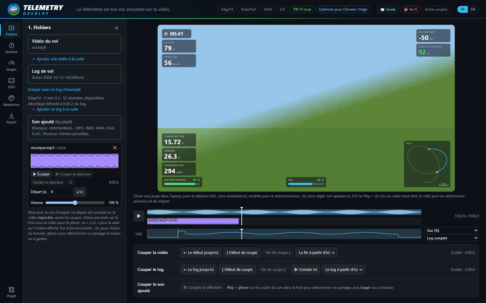
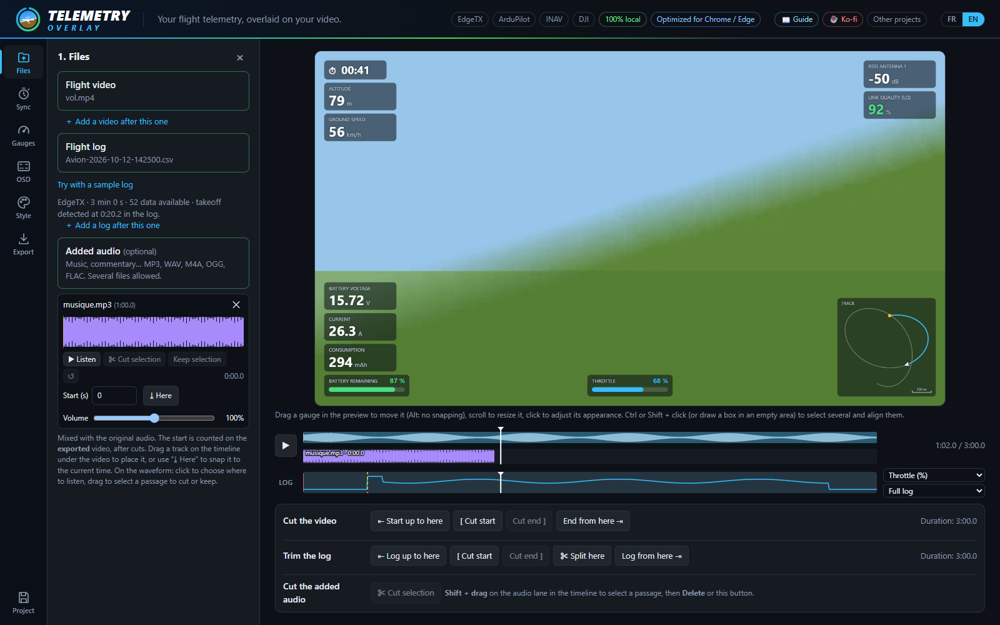
Optimisé pour Chrome et Edge sur ordinateur (export rapide, calage sur l'image, écriture directe des longs exports). Firefox et Safari fonctionnent avec des limites.
Optimised for desktop Chrome and Edge (fast export, image-motion sync, direct writing of long exports). Firefox and Safari work with limitations.
Préparer ses logs (avant le vol)
Preparing your logs (before the flight)
Ce qui s'affiche dépend de ce que le log contient. Quelques réglages côté radio, contrôleur de vol ou caméra, faits une fois, donnent des jauges plus complètes, une synchro automatique et la stabilisation.
What can be shown depends on what the log holds. A few settings on the radio, flight controller or camera, done once, give fuller gauges, automatic sync and stabilization.
Ce que chaque source apporte
| Source | GPS | Attitude | Gaz / courant (synchro son) | Gyro rapide (stabilisation) |
|---|---|---|---|---|
| EdgeTX | si capteur | ~5 Hz (CRSF) | ✓ | — |
ArduPilot .bin / .log | ✓ | ✓ | ✓ | ✓ (IMU) |
MAVLink .tlog / .rlog | ✓ | 4 à 10 Hz | ✓ | — |
| INAV / Betaflight blackbox | si GPS | ✓ | ✓ | ✓ |
| DJI (MP4, SRT, journal) | ✓ | selon fichier | — | — (nacelle) |
| GoPro | si GPS activé | — | — | ✓ |
| Insta360 | selon modèle | — | — | ✓ |
Walksnail / WTFOS .osd | si affiché | si affichée | si affiché | — |
| Garmin, Wahoo, GPX… | ✓ | — | — | — |
| Chronos de circuit (RaceChrono, AiM, VBOX…) | ✓ | inclinaison si fournie | gaz / régime si fournis | — |
Sans gaz ni courant, la synchro par le son est impossible : utilise « Caler sur le mouvement de l'image » ou le calage manuel. Sans attitude, l'horizon est estimé depuis le GPS (mention « EST. »).
What each source provides
| Source | GPS | Attitude | Throttle / current (sound sync) | Fast gyro (stabilization) |
|---|---|---|---|---|
| EdgeTX | if sensor | ~5 Hz (CRSF) | ✓ | — |
ArduPilot .bin / .log | ✓ | ✓ | ✓ | ✓ (IMU) |
MAVLink .tlog / .rlog | ✓ | 4 to 10 Hz | ✓ | — |
| INAV / Betaflight blackbox | if GPS | ✓ | ✓ | ✓ |
| DJI (MP4, SRT, flight record) | ✓ | depends on file | — | — (gimbal) |
| GoPro | if GPS on | — | — | ✓ |
| Insta360 | depends on model | — | — | ✓ |
Walksnail / WTFOS .osd | if shown | if shown | if shown | — |
| Garmin, Wahoo, GPX… | ✓ | — | — | — |
| Lap timers (RaceChrono, AiM, VBOX…) | ✓ | lean angle if provided | throttle / RPM if provided | — |
Without throttle or current, sound sync is impossible: use “Sync on image motion” or manual alignment. Without attitude, the horizon is estimated from GPS (marked “EST.”).
Réglages par source
| Source | À faire |
|---|---|
| EdgeTX | Découvre les capteurs de télémétrie (Modèle › Télémétrie), puis ajoute une fonction spéciale « Logs SD » sur un inter, avec un intervalle court (0,1 à 0,2 s). Le .csv est écrit dans LOGS/ sur la carte SD. |
| ArduPilot | Garde les messages GPS, ATT, BAT, RCIN et IMU dans LOG_BITMASK (IMU sert à la stabilisation : 50 Hz minimum). Récupère le .bin par Mission Planner / QGC ou sur la carte SD. |
| MAVLink | Mission Planner et QGroundControl enregistrent le .tlog tout seuls pendant la liaison. Ses heures suivent la réception radio : préfère le .bin quand tu l'as. |
| INAV / Betaflight | Active le blackbox (flash ou carte SD) et vide la mémoire avant de voler : une flash pleine n'enregistre plus. Télécharge le .BBL / .TXT brut par le Configurator (le CSV converti marche aussi). |
| DJI | Active les sous-titres vidéo dans les réglages caméra pour avoir le .SRT. Le journal DJIFlightRecord_….txt est dans le dossier de l'appli DJI de la radio ou du téléphone. |
| GoPro | Active le GPS dans les réglages de la caméra. Garde le .MP4 d'origine (un export de montage perd la télémétrie). |
| Insta360 | Garde le .INSV / .MP4 sorti de la caméra, pas une vidéo recadrée exportée. |
| Walksnail / WTFOS | Le contrôleur de vol doit envoyer son OSD aux lunettes (MSP DisplayPort sur l'UART de l'émetteur vidéo) et des éléments OSD doivent être placés. Active l'enregistrement de l'OSD dans les lunettes ; garde la police .png de ton firmware. |
| AiM | Les sessions natives .xrk / .drk ne se lisent pas directement : dans Race Studio, exporte la session en CSV (Export → CSV). Les passages sur la ligne (Beacon Markers) donnent les tours. |
| RaceChrono, Harry's LapTimer, TrackAddict, RaceBox | Exporte la session en CSV (RaceChrono v2 ou v3) ou en VBOX .vbo depuis l'appli. Un .nmea brut du GPS marche aussi. |
Pour la synchro automatique, filme avec le son et lance l'enregistrement vidéo avant le décollage : un coup de gaz au sol donne un repère net.
Settings per source
| Source | What to do |
|---|---|
| EdgeTX | Discover the telemetry sensors (Model › Telemetry), then add a “SD Logs” special function on a switch, with a short interval (0.1 to 0.2 s). The .csv is written to LOGS/ on the SD card. |
| ArduPilot | Keep the GPS, ATT, BAT, RCIN and IMU messages in LOG_BITMASK (IMU is used for stabilization: 50 Hz minimum). Get the .bin through Mission Planner / QGC or from the SD card. |
| MAVLink | Mission Planner and QGroundControl record the .tlog on their own while connected. Its times follow the radio reception: prefer the .bin when you have it. |
| INAV / Betaflight | Enable the blackbox (flash or SD card) and erase it before flying: a full flash stops recording. Download the raw .BBL / .TXT with the Configurator (the converted CSV works too). |
| DJI | Turn on video captions in the camera settings to get the .SRT. The DJIFlightRecord_….txt record is in the DJI app folder on the remote or phone. |
| GoPro | Turn on GPS in the camera settings. Keep the original .MP4 (an edited export loses the telemetry). |
| Insta360 | Keep the .INSV / .MP4 straight from the camera, not a reframed export. |
| Walksnail / WTFOS | The flight controller must send its OSD to the goggles (MSP DisplayPort on the video transmitter's UART) and OSD elements must be placed. Turn on OSD recording in the goggles; keep the .png font of your firmware. |
| AiM | Native .xrk / .drk sessions can't be read directly: in Race Studio, export the session to CSV (Export → CSV). Line crossings (Beacon Markers) give the laps. |
| RaceChrono, Harry's LapTimer, TrackAddict, RaceBox | Export the session as CSV (RaceChrono v2 or v3) or as VBOX .vbo from the app. A raw GPS .nmea works too. |
For automatic sync, record with sound and start the video before take-off: a throttle blip on the ground gives a clear marker.
Où trouver les fichiers
| Source | Emplacement |
|---|---|
| Walksnail Avatar | Carte SD des lunettes, dossier DCIM/ : AvatarXXXX.mp4 avec ses .osd et .srt du même nom. L'enregistrement du VTX ne contient pas de .osd. |
| DJI WTFOS | Carte SD des lunettes, DCIM/100MEDIA/ : DJIGxxxx.mp4 et DJIGxxxx.osd. |
| Drone DJI (vidéo) | Carte SD du drone, DCIM/100MEDIA/ (ou DCIM/DJI_001/) : le .SRT porte le nom du .MP4. |
| Drone DJI (journal) | Android (DJI Fly) : Android/data/dji.go.v5/files/FlightRecord/. Radio à écran (DJI RC, RC 2, RC Pro) : même dossier, radio branchée en USB. iOS : app Fichiers › DJI Fly › FlightRecords. DJI GO 4 : DJI/dji.go.v4/FlightRecord/. Les journaux récents (v13+) sont chiffrés : il faut être en ligne pour les lire. |
| INAV / Betaflight | Flash : Configurator › onglet Blackbox › « Save flash to file », puis efface la flash. Carte SD du contrôleur : LOGS/LOGxxxxx.TXT / .BFL (ou mode stockage de masse depuis l'onglet Blackbox). |
| ArduPilot | Mission Planner : Données › DataFlash Logs › « Download DataFlash Log Via Mavlink » (ou outil de logs de QGC). Carte SD du contrôleur : APM/LOGS/000000xx.BIN. |
| MAVLink | Mission Planner : Documents/Mission Planner/logs/. QGroundControl : Documents/QGroundControl/Telemetry/. |
| EdgeTX | Carte SD de la radio, dossier LOGS/. |
Where to find the files
| Source | Location |
|---|---|
| Walksnail Avatar | Goggles SD card, DCIM/ folder: AvatarXXXX.mp4 with its .osd and .srt of the same name. The VTX recording has no .osd. |
| DJI WTFOS | Goggles SD card, DCIM/100MEDIA/: DJIGxxxx.mp4 and DJIGxxxx.osd. |
| DJI drone (video) | Drone SD card, DCIM/100MEDIA/ (or DCIM/DJI_001/): the .SRT has the same name as the .MP4. |
| DJI drone (record) | Android (DJI Fly): Android/data/dji.go.v5/files/FlightRecord/. Screen remote (DJI RC, RC 2, RC Pro): same folder, remote plugged in over USB. iOS: Files app › DJI Fly › FlightRecords. DJI GO 4: DJI/dji.go.v4/FlightRecord/. Recent records (v13+) are encrypted: you must be online to read them. |
| INAV / Betaflight | Flash: Configurator › Blackbox tab › “Save flash to file”, then erase the flash. Flight controller SD card: LOGS/LOGxxxxx.TXT / .BFL (or mass storage mode from the Blackbox tab). |
| ArduPilot | Mission Planner: Data › DataFlash Logs › “Download DataFlash Log Via Mavlink” (or the QGC log tool). Flight controller SD card: APM/LOGS/000000xx.BIN. |
| MAVLink | Mission Planner: Documents/Mission Planner/logs/. QGroundControl: Documents/QGroundControl/Telemetry/. |
| EdgeTX | Radio SD card, LOGS/ folder. |
Fichiers (upload)
Files (upload)
Vidéo du vol 1. Fichiers
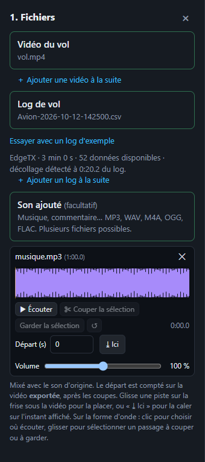
- Clic ou glisser-déposer : MP4, MOV, AVI, MKV, WebM, LRF (aperçu DJI basse résolution), INSV / LRV (Insta360).
- Déposer n'importe où : des fichiers lâchés sur l'appli sont rangés d'après leur extension — vidéo, log de vol, enregistrement OSD, police OSD (
.png), son ou projet.otproj. Un fichier non reconnu est signalé. - Plusieurs vidéos d'un coup, ou « ＋ Ajouter une vidéo à la suite » : elles sont lues bout à bout comme un seul clip (enregistrement découpé par la caméra).
- ✕ Retirer la vidéo : revient à l'aperçu du log seul ; le log, les jauges et les sons ajoutés sont gardés (les coupes et marqueurs de la vidéo sont retirés).
- Sans vidéo, l'aperçu s'affiche sur fond neutre : clique dans la courbe du log pour choisir l'instant.
Flight video 1. Files
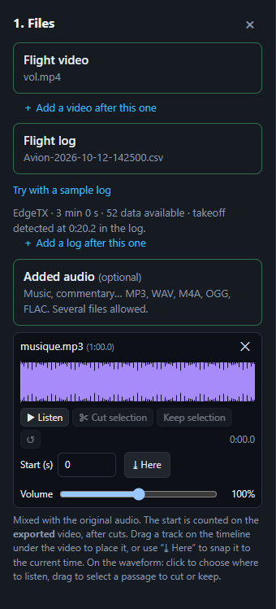
- Click or drag & drop: MP4, MOV, AVI, MKV, WebM, LRF (DJI low-res preview), INSV / LRV (Insta360).
- Drop anywhere: files dropped on the app are sorted by extension — video, flight log, OSD recording, OSD font (
.png), audio or.otprojproject. An unrecognized file is reported. - Several videos at once, or “＋ Add a video after this one”: they play back to back as a single clip (recording split by the camera).
- ✕ Remove the video: goes back to the log-only preview; the log, gauges and added sounds are kept (the video's cuts and markers are removed).
- Without a video, the preview shows on a neutral background: click the log chart to pick the moment.
Log de vol 1. Fichiers
| Source | Fichier | Synchro |
|---|---|---|
| EdgeTX | .csv du dossier LOGS | à faire |
| ArduPilot | .bin DataFlash ou .log | à faire |
| ArduPilot, PX4, INAV (MAVLink) | télémétrie de la station sol .tlog / .rlog | à faire |
| INAV / Betaflight | blackbox brut .TXT / .BBL / .BFL ou .csv | à faire |
| DJI | vidéo .MP4, .SRT, journal DJIFlightRecord_….txt ou son .csv | auto (MP4, SRT) |
| GoPro | la vidéo .MP4 elle-même | auto |
| Insta360 (expérimental) | vidéo .INSV / .MP4 d'origine | auto |
| Walksnail / DJI WTFOS (expérimental) | .osd, .srt Walksnail | auto |
| Garmin, Wahoo, Strava… | .FIT, .TCX, .GPX | à faire |
| Chronos de circuit | RaceChrono .csv, AiM .csv (Race Studio), Racelogic VBOX .vbo, .nmea, CSV Harry's LapTimer / TrackAddict / RaceBox, Garmin Catalyst .FIT | à faire |
- Vidéo DJI / GoPro / Insta360 sans autre log : la télémétrie intégrée est lue automatiquement.
- Chronos de circuit : vitesse, GPS, angle d'inclinaison, accélérations longitudinale / latérale, régime, gaz, températures et la donnée Tour (tour en cours) ; chaque passage sur la ligne devient un marqueur proposé.
- Un blackbox contient souvent plusieurs vols (un par armement) : le plus gros est choisi, une liste permet d'en prendre un autre.
- « ＋ Ajouter un log à la suite » : colle un autre log derrière (log coupé en plusieurs fichiers, vol suivant). Chaque log devient une partie recalable, repérée par une bande de couleur sur la courbe.
- ✕ Retirer le log (un seul log chargé) : la vidéo, ses coupes et la disposition des jauges sont gardées.
- « Essayer avec un exemple (vidéo + OSD) », au milieu de l'aperçu tant que rien n'est chargé, charge une minute de vol filmée avec des lunettes Walksnail Avatar et son OSD INAV.
Flight log 1. Files
| Source | File | Sync |
|---|---|---|
| EdgeTX | .csv from the LOGS folder | manual |
| ArduPilot | DataFlash .bin or .log | manual |
| ArduPilot, PX4, INAV (MAVLink) | ground station telemetry .tlog / .rlog | manual |
| INAV / Betaflight | raw blackbox .TXT / .BBL / .BFL or .csv | manual |
| DJI | .MP4 video, .SRT, DJIFlightRecord_….txt record or its .csv | auto (MP4, SRT) |
| GoPro | the .MP4 video itself | auto |
| Insta360 (experimental) | original .INSV / .MP4 | auto |
| Walksnail / DJI WTFOS (experimental) | .osd, Walksnail .srt | auto |
| Garmin, Wahoo, Strava… | .FIT, .TCX, .GPX | manual |
| Lap timers | RaceChrono .csv, AiM .csv (Race Studio), Racelogic VBOX .vbo, .nmea, Harry's LapTimer / TrackAddict / RaceBox CSV, Garmin Catalyst .FIT | manual |
- DJI / GoPro / Insta360 video with no other log: the embedded telemetry is read automatically.
- Lap timers: speed, GPS, lean angle, longitudinal / lateral acceleration, RPM, throttle, temperatures and the Lap field (current lap); each line crossing becomes a suggested marker.
- A blackbox often holds several flights (one per arming): the largest is picked, a list lets you choose another.
- “＋ Add a log after this one”: appends another log (log split into several files, next flight). Each log becomes a realignable part, shown by a colour band on the chart.
- ✕ Remove the log (single log loaded): the video, its cuts and the gauge layout are kept.
- “Try with a sample (video + OSD)”, in the middle of the preview while nothing is loaded, loads one minute of flight filmed with Walksnail Avatar goggles and its INAV OSD.
Son ajouté (musique, commentaire) 1. Fichiers
- Un ou plusieurs fichiers : MP3, WAV, M4A / AAC, OGG / Opus, FLAC.
- Chaque piste a un départ (s), un volume (0 à 200 %), et se retire avec ✕. « ⤓ Ici » la cale sur l'instant affiché.
- Le départ est compté sur la vidéo exportée (après les coupes) : la musique continue sans saut aux raccords.
- Glisse la piste dans son couloir de la frise pour la déplacer.
- Forme d'onde : clic = point d'écoute (« ▶ Écouter »), glisser = sélection à couper ou à garder seule ; « ↺ » annule les coupes. Voir aussi Couper le son.
- Mixé avec le son d'origine en une seule piste audio ; volume réduit automatiquement si le mix sature.
Added sound (music, commentary) 1. Files
- One or more files: MP3, WAV, M4A / AAC, OGG / Opus, FLAC.
- Each track has a start (s), a volume (0 to 200 %), and is removed with ✕. “⤓ Here” aligns it on the current moment.
- The start counts on the exported video (after cuts): the music keeps going across the joins.
- Drag the track in its lane of the timeline to move it.
- Waveform: click = listening point (“▶ Listen”), drag = selection to cut or keep alone; “↺” undoes the cuts. See also Cutting the sound.
- Mixed with the original sound into a single audio track; volume lowered automatically if the mix clips.
Synchronisation vidéo / log
Video / log synchronisation
Calage automatique 2. Synchro
- Synchro automatique (son des moteurs, sinon mouvement de l'image) : cochée par défaut, compare le bruit des moteurs dans le son de la vidéo à la courbe des gaz. Si la vidéo n'a pas de son exploitable (pas de son, son muet, rien de net) ou que le log n'a ni gaz ni courant, elle passe d'elle-même au mouvement de l'image.
- Caler sur le son des moteurs : relance cette comparaison à la demande.
- Caler sur le mouvement de l'image : compare les rotations visibles (roulis, tangage, lacet) à celles du log. Utile sans son exploitable (moteur thermique, vent). Analyse au plus 2 min, demande Chrome / Edge.
- Vérifier le calage sur toute la vidéo : une fois calée, mesure le décalage tout au long de la vidéo. Certaines caméras perdent quelques secondes de vol en cours d'enregistrement (souvent marquées par une image blanche ou noire) ou entre deux fichiers : le log prend alors de l'avance. L'application liste ces sauts et propose de couper le vol non filmé du log (Ctrl+Z pour annuler). Quelques minutes pour une heure de vidéo, Chrome / Edge.
- Vidéo DJI MP4 / SRT, GoPro, Insta360, OSD lunettes : synchro faite d'office.
Automatic alignment 2. Sync
- Auto sync (motor sound, otherwise image motion): on by default, compares the motor noise in the video's sound to the throttle curve. If the video has no usable sound (no sound, silent track, no clear match) or the log has neither throttle nor current, it switches to image motion by itself.
- Sync on motor sound: runs that comparison on demand.
- Sync on image motion: compares the visible rotations (roll, pitch, yaw) to the log. Useful without usable sound (combustion engine, wind). Analyses at most 2 min, needs Chrome / Edge.
- Check sync over the whole video: once synced, measures the offset all along the video. Some cameras lose a few seconds of flight while recording (often marked by a white or black frame) or between two files: the log then gets ahead. The app lists these jumps and offers to cut the unrecorded flight from the log (Ctrl+Z to undo). A few minutes for an hour of video, Chrome / Edge.
- DJI MP4 / SRT, GoPro, Insta360, goggle OSD: synced out of the box.
Calage manuel 2. Synchro
- Mets la vidéo sur un instant reconnaissable (décollage, coup de gaz) → Marquer l'instant vidéo.
- Clique sur le même instant dans la courbe du log, ou Caler sur le décollage (détection automatique). Si la vidéo commence en vol, mets-la sur le posé et clique sur Caler sur l'atterrissage.
- Affine le décalage avec ±0,01 / ±0,1 / ±1 s ou en le tapant.
La courbe sous la vidéo peut afficher n'importe quelle donnée du log, en vue « Aligné sur la frise », « Log complet » ou « Vidéo montée ».
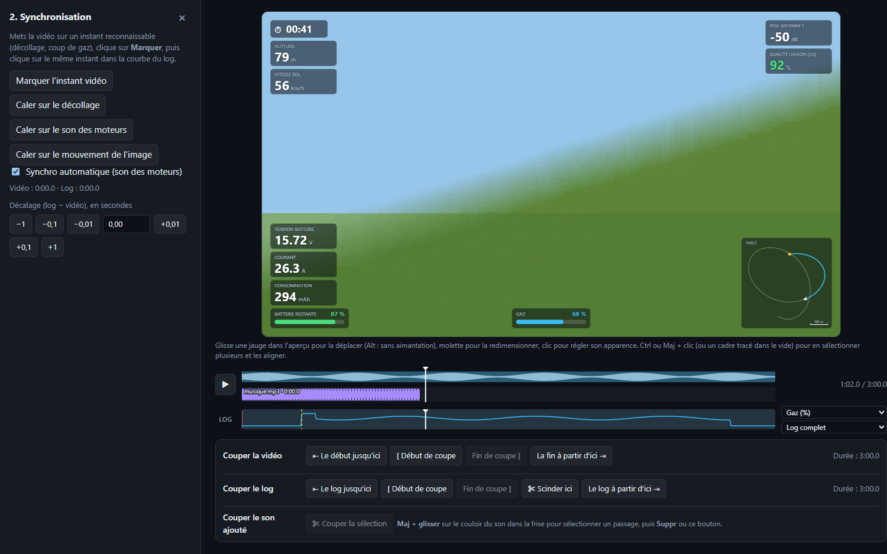
Manual alignment 2. Sync
- Put the video on a recognisable moment (take-off, throttle punch) → Mark video time.
- Click the same moment in the log chart, or Snap to takeoff (automatic detection). If the video starts in flight, move it to the touchdown and click Snap to landing.
- Fine-tune the offset with ±0.01 / ±0.1 / ±1 s or by typing it.
The chart under the video can show any log field, in “Aligned with timeline”, “Full log” or “Edited video” view.
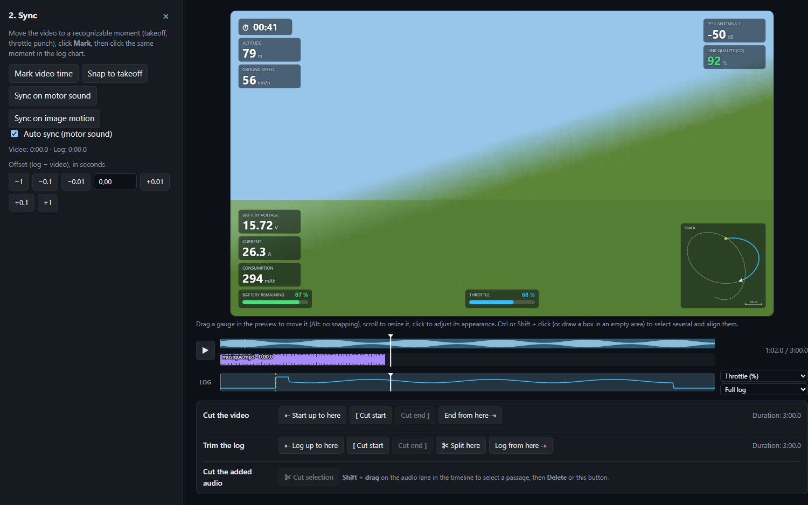
Stabilisation par le gyroscope 2. Synchro
En développement. Demande un log avec un gyroscope rapide : blackbox INAV / Betaflight brute, ArduPilot .bin / .log, télémétrie GoPro ou Insta360.
- Synchronise la vidéo et le log (à une seconde près suffit).
- Coche Stabiliser la vidéo avec le gyroscope du log : la calibration compare le mouvement de l'image au gyroscope (montage de la caméra, focale, objectif, rolling shutter, recalage à la milliseconde).
- Règle le Lissage (image plus calme ou qui suit mieux les virages) et l'Agrandissement (bords cachés).
La stabilisation garde la synchro de sa calibration : tu peux ensuite retoucher celle des jauges. Elle s'applique à l'aperçu et à l'export rapide, et elle est enregistrée dans le projet.
Gyro stabilization 2. Sync
In development. Needs a log with a fast gyroscope: raw INAV / Betaflight blackbox, ArduPilot .bin / .log, GoPro or Insta360 telemetry.
- Sync the video and the log (within a second is enough).
- Tick Stabilize the video with the log gyroscope: the calibration compares the image motion with the gyroscope (camera mounting, focal length, lens, rolling shutter, millisecond alignment).
- Set Smoothing (calmer image, or one that follows turns more closely) and Zoom (hidden edges).
Stabilization keeps the sync of its calibration: you can then adjust the gauge sync. It applies to the preview and the fast export, and it is saved in the project.
Jauges
Gauges
Ajouter et choisir l'affichage 3. Jauges
- « Ajouter une jauge » : recherche une donnée (Entrée ajoute le premier résultat).
- Types d'affichage : Valeur, Graphique, Cadran, Barre, Cadran à aiguille, Échelle verticale (défile derrière la valeur, avec tendance).
- Position : 8 zones prédéfinies, ou « Libre » en glissant la jauge dans l'aperçu. L'ordre de la liste = ordre d'empilement dans une zone.
- Réglages de la donnée : multiplier / ajouter (conversion), unité, décimales, lissage, plage min / max, seuils de couleur, alarme au-dessus / en dessous d'un seuil.
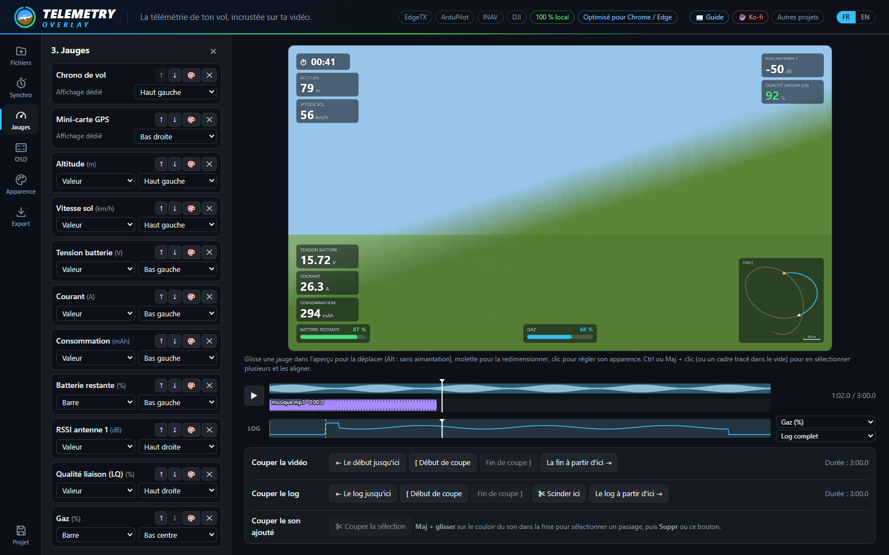
Adding gauges and choosing the display 3. Gauges
- “Add a gauge”: search a field (Enter adds the first result).
- Display types: Value, Graph, Dial, Bar, Needle gauge, Vertical tape (scrolls behind the value, with trend).
- Position: 8 preset zones, or “Free” by dragging the gauge in the preview. List order = stacking order inside a zone.
- Data settings: multiply / add (conversion), unit, decimals, smoothing, min / max range, colour thresholds, alarm above / below a threshold.
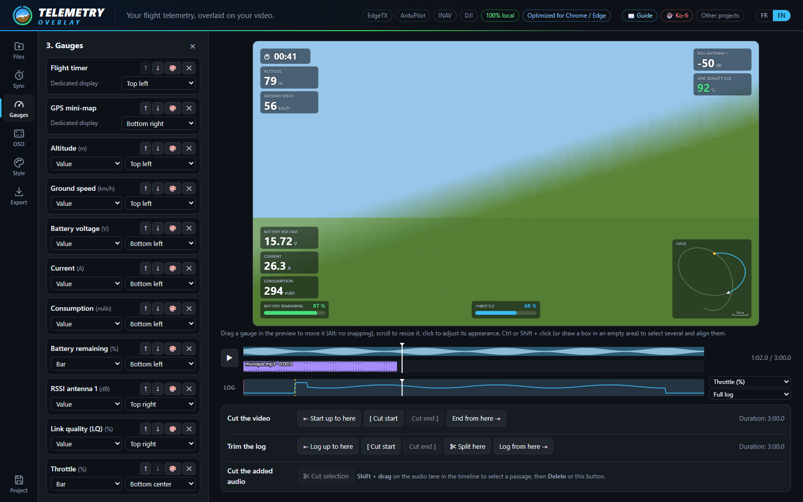
Jauges spéciales 3. Jauges › Spéciales
- Chrono de vol, Statistiques du vol (vitesse / altitude / distance max, distance parcourue).
- Titre du chapitre : le nom des marqueurs en fondu dans la vidéo.
- Panneaux de valeurs (3) : plusieurs données dans un cadre, lignes ajoutées / retirées / réordonnées dans 🎨, titre optionnel.
- Horizon artificiel rond ou rectangulaire (attitude estimée depuis le GPS si pas de gyro, mention « EST. »).
- Compas (bandeau de cap, ou route sol), Manches, Carte de vol 3D (sur relief réel, ou en plein écran).
- Mini-carte GPS : fond satellite (Esri, Internet requis), tout le vol ou suivi de l'aéronef avec zoom, nord ou cap en haut. Vue agrandie déclenchée par n'importe quelle donnée (inter de la radio, voie RC…) au-dessus / en dessous d'un seuil, avec taille, contenu et durée d'animation réglables.
Special gauges 3. Gauges › Special
- Flight timer, Flight statistics (max speed / altitude / distance, distance travelled).
- Chapter title: the name of the markers fading in on the video.
- Value panels (3): several fields in one frame, rows added / removed / reordered in 🎨, optional title.
- Artificial horizon, round or rectangular (attitude estimated from GPS without a gyro, marked “EST.”).
- Compass (heading tape, or ground track), Sticks, 3D flight map (on real terrain, or full screen).
- GPS mini-map: satellite background (Esri, needs Internet), whole flight or follow the aircraft with zoom, north or heading up. Expanded view triggered by any field (radio switch, RC channel…) above / below a threshold, with adjustable size, content and animation duration.
Carte de vol 3D sur relief réel 3. Jauges › Carte de vol 3D
- Fond : « Plat (quadrillage) » ou « Relief réel + photo satellite » — le vol est dessiné sur le vrai relief (altitudes AWS Terrain Tiles) drapé de la photo satellite (Esri), rendu en WebGL.
- Vue fixe (depuis le sud-ouest) ou tournante ; exagération du relief ×1 à ×3.
- La trace est posée au sol au point de décollage, que l'altitude du log soit relative ou absolue.
3D flight map on real terrain 3. Gauges › 3D flight map
- Background: “Flat (grid)” or “Real terrain + satellite photo” — the flight is drawn over the real relief (AWS Terrain Tiles elevations) draped with the satellite photo (Esri), rendered in WebGL.
- View fixed (from the south-west) or rotating; terrain exaggeration ×1 to ×3.
- The track is set on the ground at the takeoff point, whether the log altitude is relative or absolute.
Vue 3D plein écran à la place de la vidéo 3. Jauges › Carte de vol 3D
- Plein écran : « Jamais », « Toujours », ou « Selon une donnée du log » (un inter de la radio, une voie RC…) au-dessus / en dessous d'un seuil, avec une durée de transition (fondu, 0 à 3 s).
- Une caméra suit l'aéronef par l'arrière — proche (60 m), moyenne (150 m) ou lointaine (400 m) — au-dessus du relief réel qui s'étend jusqu'à un horizon brumeux sous un ciel.
- Un rideau descend sous la partie déjà volée. Couleur du rideau : « Dégradé jaune → rouge » (du début du vol à l'instant présent, par défaut) ou « Couleur des jauges ».
- Les autres jauges restent par-dessus ; la jauge 3D elle-même est masquée pendant le plein écran.
Relief, photo satellite et fond de la mini-carte sont désactivés par défaut : les activer télécharge les tuiles de la zone du vol, ces serveurs apprennent donc où tu as volé (rien d'autre n'est envoyé). Connexion Internet nécessaire ; les tuiles sont chargées avant l'export, séquence PNG comprise.
Full-screen 3D view instead of the video 3. Gauges › 3D flight map
- Full screen: “Never”, “Always”, or “Driven by a log value” (a radio switch, an RC channel…) above / below a threshold, with a transition duration (fade, 0 to 3 s).
- A camera follows the aircraft from behind — close (60 m), medium (150 m) or far (400 m) — over the real terrain stretching to a hazy horizon under a sky.
- A curtain hangs under the part already flown. Curtain color: “Yellow → red gradient” (from the start of the flight to now, default) or “Gauge color”.
- The other gauges stay on top; the 3D gauge itself is hidden while the view is full screen.
Terrain, satellite photo and the mini-map background are off by default: enabling them downloads the tiles of the flight area, so these servers learn where you flew (nothing else is sent). Needs an Internet connection; tiles are loaded before the export, PNG sequence included.
Placer et régler dans l'aperçu Aperçu
- Glisser une jauge pour la déplacer (aimantation sur marges et centre ; Alt pour la désactiver). ⟲ la remet à sa place.
- Molette sur une jauge : la redimensionner.
- Clic sur une jauge (ou 🎨 dans la liste) : son apparence personnalisée — nom, position du nom, police, fond, opacité, couleurs, durée du graphique, taille. « Appliquer à toutes les jauges » recopie le réglage.
- Masquer / flouter selon une valeur : cache ou floute la jauge quand une donnée (la sienne ou une autre, ex. un inter de la radio) passe au-dessus / en dessous d'un seuil, avec une transition réglable.
- Plein écran (bouton à côté du temps, ou touche F) : l'aperçu occupe tout l'écran avec une petite barre lecture / temps ; Échap ou F pour en sortir.
- Barre de séparation entre l'aperçu et la frise : glisse-la pour agrandir ou réduire la partie du dessous (double-clic : taille normale). La taille est mémorisée.
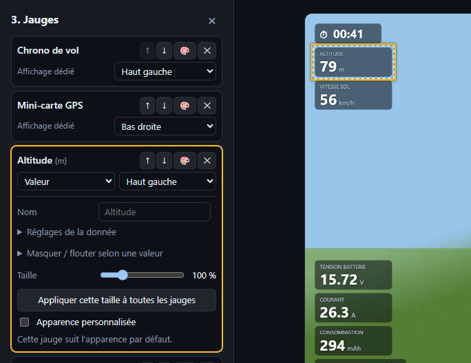
Placing and tuning in the preview Preview
- Drag a gauge to move it (snaps to margins and centre; Alt to disable). ⟲ puts it back.
- Mouse wheel on a gauge: resize it.
- Click a gauge (or 🎨 in the list): its custom look — name, name position, font, background, opacity, colours, graph duration, size. “Apply to all gauges” copies the setting.
- Hide / blur based on a value: hides or blurs the gauge when a field (its own or another, e.g. a radio switch) goes above / below a threshold, with an adjustable transition.
- Full screen (button next to the time, or F key): the preview fills the screen with a small play / time bar; Esc or F to leave.
- Split bar between the preview and the timeline: drag it to enlarge or shrink the lower part (double-click: normal size). The size is remembered.
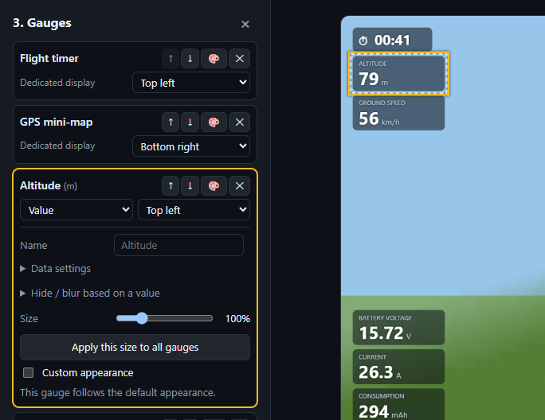
Sélection de plusieurs jauges et alignement Aperçu
- Ctrl ou Maj + clic : ajoute / retire une jauge de la sélection.
- Tracer un cadre dans le vide sélectionne les jauges qu'il touche (avec Ctrl / Maj, complète la sélection). Échap vide la sélection.
- Glisser une jauge sélectionnée déplace tout le groupe.
- La barre d'outils qui apparaît (déplaçable par sa poignée, double-clic pour la remettre en haut) :
- Aligner : gauche, centre horizontal, droite, haut, centre vertical, bas ;
- Répartir horizontalement / verticalement (espacement égal, 3 jauges ou plus) ;
- Disposer en Ligne ou en Colonne ;
- Fond commun : un seul fond pour tout le groupe (recliquer pour le retirer).
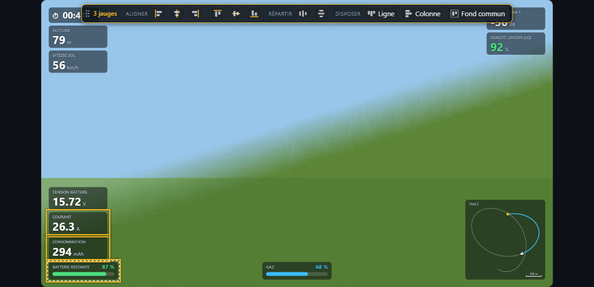
Selecting several gauges and aligning them Preview
- Ctrl or Shift + click: adds / removes a gauge from the selection.
- Drawing a box in empty space selects the gauges it touches (with Ctrl / Shift, adds to the selection). Esc clears the selection.
- Dragging a selected gauge moves the whole group.
- The toolbar that appears (movable by its grip, double-click to put it back on top):
- Align: left, horizontal centre, right, top, vertical centre, bottom;
- Distribute horizontally / vertically (equal spacing, 3 gauges or more);
- Arrange as a Row or a Column;
- Shared background: one background for the whole group (click again to remove).
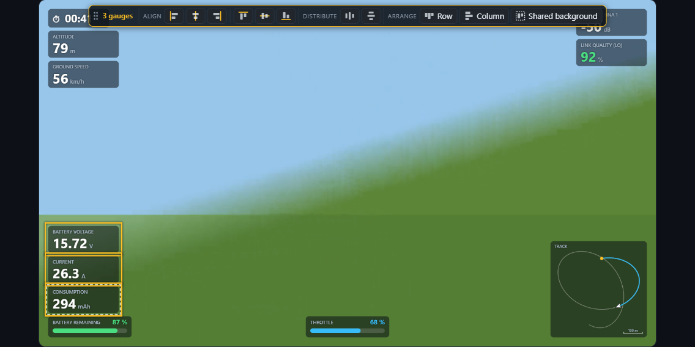
Apparence par défaut
Default appearance
Pour toutes les jauges Apparence
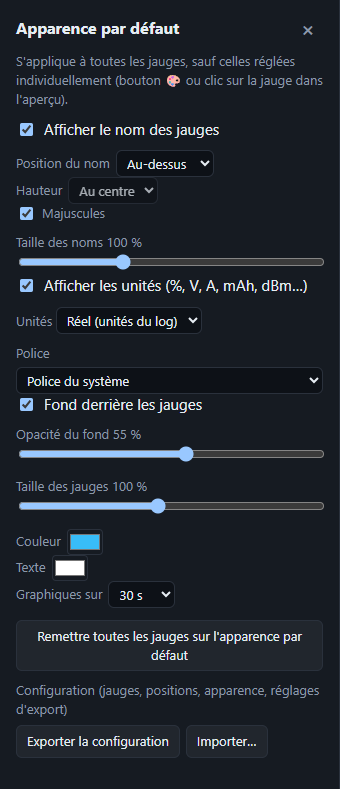
- Nom des jauges : affiché ou non, position (dessus, dessous, gauche, droite), hauteur, majuscules, taille.
- Unités affichées ou non ; système : Réel (celles du log), Métrique, Impérial, Aviation (ft, kt, NM).
- Police : système, web (Orbitron, Rajdhani…) ou toute police installée en tapant son nom.
- Fond et son opacité, taille générale, couleur d'accent, couleur du texte, durée des graphiques (10 s à 2 min).
- « Remettre toutes les jauges sur l'apparence par défaut » efface les réglages individuels.
For all gauges Style
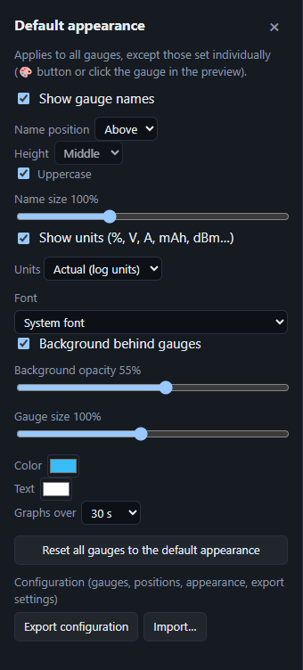
- Gauge names: shown or not, position (above, below, left, right), height, upper case, size.
- Units shown or not; system: Actual (the log's), Metric, Imperial, Aviation (ft, kt, NM).
- Font: system, web (Orbitron, Rajdhani…) or any installed font by typing its name.
- Background and its opacity, overall size, accent colour, text colour, graph duration (10 s to 2 min).
- “Reset all gauges to the default appearance” clears individual settings.
OSD d'origine (Walksnail / DJI)
Original OSD (Walksnail / DJI)
Redessiner l'OSD des lunettes OSD
- Charge le
.osdet la police OSD.png: l'OSD est redessiné par-dessus la vidéo, avec ou sans les jauges. - Taille, décalage X / Y, vitesse (corrige la dérive d'horloge).
- Masquer des cases… puis clic dans l'aperçu pour cacher un élément (nom du pilote, coordonnées GPS…).
Redrawing the goggles' OSD OSD
- Load the
.osdand the OSD font.png: the OSD is redrawn over the video, with or without gauges. - Size, X / Y offset, speed (fixes clock drift).
- Hide cells… then click in the preview to hide an item (pilot name, GPS coordinates…).
Couper la vidéo, le log et le son
Cutting the video, the log and the sound
Couper la vidéo Sous la frise
- « ⇤ Le début jusqu'ici » et « La fin à partir d'ici ⇥ ».
- « [ Début de coupe » (I) puis « Fin de coupe ] » (O) pour retirer un passage au milieu. ✕ annule une coupe.
- Passages coupés hachurés en rouge, sautés dans l'aperçu ; la télémétrie reste synchronisée.
Cutting the video Under the timeline
- “⇤ Start up to here” and “End from here ⇥”.
- “[ Cut start” (I) then “Cut end ]” (O) to remove a middle passage. ✕ undoes a cut.
- Cut passages are hatched red and skipped in the preview; telemetry stays in sync.
Couper le log et le recaler par parties Sous la frise
- « Le log jusqu'ici » / « à partir d'ici » / coupe au milieu : ignore le sol, l'attente… (jauges, statistiques et échelles n'en tiennent plus compte).
- ✂ Scinder ici : coupe le log en deux parties sans rien retirer.
- Chaque partie se recale indépendamment : décalage, « commencer ici », glisser sur la courbe, coller à la précédente, caler sur le son ou sur le mouvement de l'image, ou recoller.
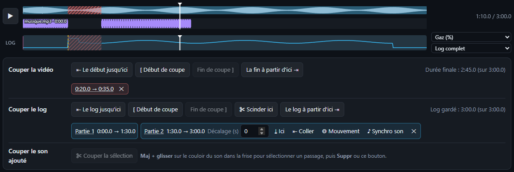
Cutting the log and realigning it in parts Under the timeline
- “⇤ Log up to here” / “Log from here ⇥” / middle cut: ignores ground time, waiting… (gauges, statistics and scales stop counting it).
- ✂ Split here: splits the log into two parts without removing anything.
- Each part realigns on its own: offset, “start here”, drag on the chart, stick to the previous one, sync on sound or image motion, or join back.
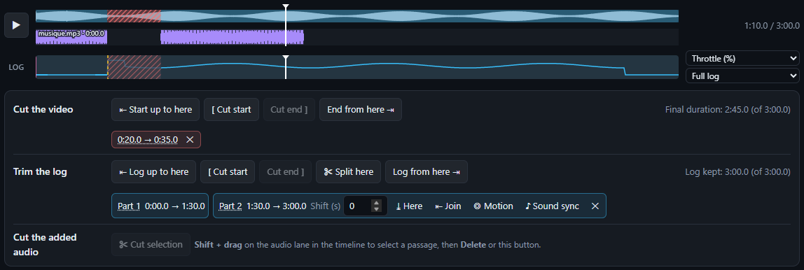
Marqueurs et chapitres Sous la frise
- ◆ Marqueur ici (M) pose un marqueur à l'instant affiché, ouvre le volet et sélectionne son nom : tape directement le tien, Entrée pour valider. ☰ Liste et export ouvre le volet Marqueurs (à gauche) : nom, couleur, ⌖ pour le déplacer à l'instant affiché, ✕ pour le retirer. Sur la frise, un losange qu'on peut glisser.
- ✨ Proposer depuis le log ajoute les moments marquants du vol (décollage, atterrissage, altitude, vitesse et distance max, changements de mode de vol, batterie sous 20 %), en pointillés dans la liste. Avec un chrono de circuit, un marqueur par tour avec le temps du tour précédent (meilleur tour en violet). Les relancer remplace ces propositions, pas les marqueurs posés à la main. La vidéo et le log doivent être synchronisés.
- Les temps exportés sont ceux de la vidéo montée : un marqueur dans un passage coupé est grisé et n'est pas exporté.
- Sans vidéo (log seul) : les marqueurs se posent sur le temps du log, s'affichent sur sa courbe et suivent l'export sans vidéo. Une vidéo chargée ensuite les reprend selon la synchronisation du moment ; ceux qui tombent hors de la vidéo sont retirés.
- Chapitres YouTube : texte à copier dans la description (0:00 « Intro » ajouté si besoin). L'appli signale ce que YouTube refuse : moins de 3 chapitres, ou un chapitre de moins de 10 s.
- DaVinci Resolve (
.edl) : clic droit sur la timeline → Timelines → Import → Timeline Markers from EDL. Choisis le timecode de départ de la timeline (01:00:00:00 par défaut dans Resolve). Les couleurs sont reprises. - Premiere Pro (
.xml, format Final Cut Pro 7) : Fichier → Importer donne une séquence avec la vidéo exportée et ses marqueurs (indique le fichier si Premiere ne le trouve pas). Aussi lu par DaVinci Resolve. - L'export rapide inscrit les chapitres dans le MP4 : VLC, mpv et les lecteurs basés sur ffmpeg les affichent.
- Jauge Titre du chapitre (« Spéciales ») : le nom du marqueur apparaît en fondu dans la vidéo à son passage, pendant 2 à 10 s ou jusqu'au marqueur suivant.
Markers and chapters Under the timeline
- ◆ Marker here (M) adds a marker at the current time, opens the panel and selects its name: just type yours, Enter to confirm. ☰ List and export opens the Markers panel (on the left): name, color, ⌖ to move it to the current time, ✕ to remove it. On the timeline, a diamond you can drag.
- ✨ Suggest from the log adds the key moments of the flight (takeoff, landing, max altitude, speed and distance, flight mode changes, battery below 20%), dashed in the list. With a lap timer, one marker per lap with the previous lap time (best lap in purple). Running it again replaces these suggestions, not the markers you placed. The video and the log must be in sync.
- Exported times are those of the edited video: a marker in a cut passage is greyed out and not exported.
- Without a video (log only): markers use the log time, show on its graph and follow the export without video. A video loaded afterwards takes them over using the sync at that moment; those falling outside the video are removed.
- YouTube chapters: text to paste into the description (0:00 “Intro” added if needed). The app flags what YouTube rejects: fewer than 3 chapters, or a chapter shorter than 10 s.
- DaVinci Resolve (
.edl): right-click the timeline → Timelines → Import → Timeline Markers from EDL. Pick the timeline start timecode (01:00:00:00 by default in Resolve). Colors are kept. - Premiere Pro (
.xml, Final Cut Pro 7 format): File → Import gives a sequence with the exported video and its markers (point to the file if Premiere can't find it). Also read by DaVinci Resolve. - The fast export writes the chapters into the MP4: VLC, mpv and ffmpeg-based players show them.
- Chapter title gauge (“Special”): the marker name fades in on the video when it is reached, for 2 to 10 s or until the next marker.
Couper le son ajouté Sous la frise
- Maj + glisser sur le couloir d'un son dans la frise pour sélectionner un passage, puis Suppr ou « ✂ Couper la sélection ».
- Ou depuis la forme d'onde de la piste dans « 1. Fichiers ». Les raccords sont adoucis par un court fondu.
Cutting the added sound Under the timeline
- Shift + drag on a sound's lane in the timeline to select a passage, then Del or “✂ Cut selection”.
- Or from the track's waveform in “1. Files”. Joins are smoothed by a short fade.
Export
Export
Formats 4. Export
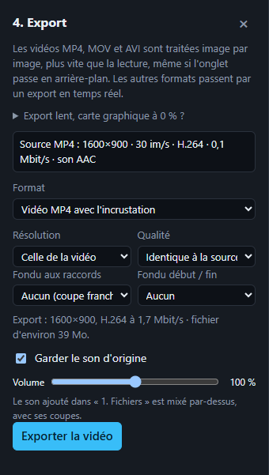
- Vidéo MP4 avec l'incrustation. Pour MP4 / MOV / AVI : export rapide image par image (plus vite que la lecture, onglet en arrière-plan possible). Autres formats : export temps réel (onglet au premier plan).
- Séquence PNG transparente : l'incrustation seule, à poser dans Premiere, Resolve, Final Cut… Jusqu'en 4K même depuis une vidéo HD.
- Sous Chrome / Edge, le fichier est écrit au fil de l'eau : les longs exports 4K passent.
Formats 4. Export
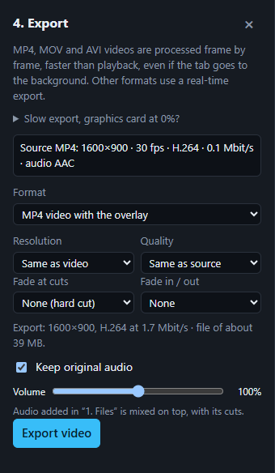
- MP4 video with the overlay. For MP4 / MOV / AVI: fast export frame by frame (faster than playback, tab may go to the background). Other formats: real-time export (tab in the foreground).
- Transparent PNG sequence: the overlay alone, to place in Premiere, Resolve, Final Cut… Up to 4K even from an HD video.
- In Chrome / Edge, the file is written as it encodes: long 4K exports work.
Réglages 4. Export
- Résolution : celle de la vidéo, ou 4K / 1440p / 1080p / 720p.
- Qualité : identique à la source (par défaut), supérieure, maximale, légère, ou débit personnalisé en Mbit/s. Estimation du fichier affichée.
- Fondus : aux raccords (0,25 à 1 s) et début / fin (0,5 à 3 s), image et son.
- Son : garder le son d'origine (avec volume) ; les pistes ajoutées sont mixées par-dessus.
- L'export peut être annulé. Seuls les passages gardés sont exportés.
Export lent, carte graphique à 0 % ? Paramètres Windows › Système › Affichage › Graphiques → navigateur en « Hautes performances », puis relance-le. Branche le PC sur secteur.
Settings 4. Export
- Resolution: the video's, or 4K / 1440p / 1080p / 720p.
- Quality: same as source (default), higher, maximum, light, or custom bitrate in Mbit/s. File size estimate shown.
- Fades: at joins (0.25 to 1 s) and start / end (0.5 to 3 s), picture and sound.
- Sound: keep the original sound (with volume); added tracks are mixed on top.
- The export can be cancelled. Only kept passages are exported.
Slow export, graphics card at 0 %? Windows Settings › System › Display › Graphics → set the browser to “High performance”, then restart it. Plug the PC into mains power.
Projet, disposition et configuration
Project, layout and configuration
Sauvegarder et reprendre Projet · Apparence
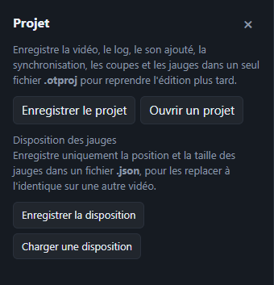
| Fichier | Contient | Où |
|---|---|---|
Projet .otproj | vidéo, log, sons ajoutés, synchro, coupes, marqueurs, jauges, position de lecture — tout pour reprendre l'édition | Projet |
Disposition .json | position et taille des jauges seulement | Projet |
Configuration .json | jauges, positions, apparence, réglages d'export — à réappliquer sur une autre vidéo | Apparence |
Les choix de jauges et d'apparence sont aussi mémorisés dans le navigateur.
Saving and resuming Project · Style
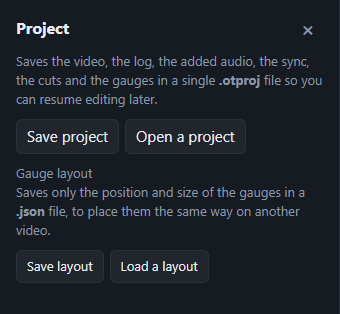
| File | Contains | Where |
|---|---|---|
Project .otproj | video, log, added sounds, sync, cuts, markers, gauges, playhead — everything to resume editing | Project |
Layout .json | gauge position and size only | Project |
Configuration .json | gauges, positions, appearance, export settings — to reapply to another video | Style |
Gauge and appearance choices are also remembered in the browser.
Raccourcis clavier et souris
Keyboard and mouse shortcuts
| Espace | Lecture / pause |
| ← → (ou , .) | Image par image (aussi les boutons ◂| et |▸ autour de ▶) |
| Maj + ← → | Reculer / avancer de 5 s |
| I / O | Début / fin de coupe vidéo |
| M | Poser un marqueur (chapitre) |
| F | Aperçu en plein écran (Échap ou F pour sortir) |
| Suppr | Couper la sélection du son ajouté |
| Ctrl + Z | Annuler (jauges, apparence, coupes, marqueurs, synchro, pistes audio) |
| Ctrl + Y ou Ctrl + Maj + Z | Rétablir |
| Ctrl / Maj + clic, cadre | Sélectionner plusieurs jauges |
| Échap | Vider la sélection de jauges |
| Alt + glisser | Déplacer une jauge sans aimantation |
| Molette sur une jauge | Redimensionner |
| Space | Play / pause |
| ← → (or , .) | Frame by frame (also the ◂| and |▸ buttons around ▶) |
| Shift + ← → | Back / forward 5 s |
| I / O | Video cut start / end |
| M | Add a marker (chapter) |
| F | Full-screen preview (Esc or F to leave) |
| Del | Cut the added-sound selection |
| Ctrl + Z | Undo (gauges, appearance, cuts, markers, sync, audio tracks) |
| Ctrl + Y or Ctrl + Shift + Z | Redo |
| Ctrl / Shift + click, box | Select several gauges |
| Esc | Clear the gauge selection |
| Alt + drag | Move a gauge without snapping |
| Wheel on a gauge | Resize |
Dépannage
Troubleshooting
Problèmes fréquents
- « Format de log non reconnu »
- Vérifie que c'est bien le fichier d'origine (pas un export d'un autre outil). Un blackbox au format v1 (très ancien) n'est pas lu. Sinon, signale-le : le lien joint au message envoie le format, sans les valeurs.
- « Synchro automatique impossible : pas de gaz ni de courant dans le log »
- Le log ne permet pas la synchro par le son. Utilise Caler sur le mouvement de l'image ou le calage manuel.
- La synchro automatique tombe à côté
- Vent, moteur thermique ou musique couvrent les moteurs. Essaie le calage sur l'image, ou marque le décollage à la main puis affine avec ±0,1 s.
- Calé à un moment du vol, décalé à un autre
- La caméra a perdu des images (accroc d'enregistrement, raccord entre deux fichiers). Clique sur Vérifier le calage sur toute la vidéo : les sauts sont repérés et le log est coupé d'autant.
- « Cette vidéo ne contient pas de télémétrie lisible »
- La vidéo a été réencodée, ou le modèle DJI n'écrit pas de télémétrie dans le MP4 : charge le
.SRTou le journal de vol. Voir Préparer ses logs. - « Cet enregistrement OSD est vide »
- Aucun élément n'était affiché dans les lunettes pendant le vol : active MSP DisplayPort et place des éléments OSD.
- La stabilisation n'est pas proposée
- Le log n'a pas de gyroscope assez rapide (50 Hz minimum) : EdgeTX,
.tloget DJI n'en ont pas. Il faut une blackbox, un.binArduPilot, une GoPro ou une Insta360. - L'horizon affiche « EST. »
- Le log n'a pas d'attitude : elle est estimée depuis la trace GPS. Normal pour une GoPro, un GPX…
- Une jauge reste vide ou à zéro
- La donnée n'existe pas dans ce log, ou pas à cet instant (GPS sans fix au début). Affiche-la dans la courbe sous la vidéo pour vérifier.
- Mini-carte ou carte 3D sans fond
- Le fond satellite et le relief sont désactivés par défaut et demandent Internet. Active-les dans les réglages de la jauge.
- Export lent ou qui échoue
- Utilise Chrome ou Edge sur ordinateur, PC branché sur secteur, navigateur en « Hautes performances » dans les paramètres graphiques de Windows. Sous Firefox / Safari, l'export rapide et l'écriture directe ne sont pas disponibles.
Common problems
- “Unrecognized log format”
- Check it is the original file (not an export from another tool). A v1 blackbox (very old) is not read. Otherwise, report it: the link in the message sends the format, without the values.
- “Auto sync unavailable: no throttle or current in the log”
- The log cannot be synced by sound. Use Sync on image motion or manual alignment.
- Automatic sync is off
- Wind, a combustion engine or music cover the motors. Try image-motion sync, or mark take-off by hand and fine-tune with ±0.1 s.
- Synced at one moment of the flight, off at another
- The camera lost frames (recording glitch, join between two files). Click Check sync over the whole video: the jumps are found and the log is cut accordingly.
- “This video contains no readable telemetry”
- The video was re-encoded, or the DJI model writes no telemetry in the MP4: load the
.SRTor the flight record. See Preparing your logs. - “This OSD recording is empty”
- Nothing was shown in the goggles during the flight: enable MSP DisplayPort and place OSD elements.
- Stabilization is not offered
- The log has no fast enough gyroscope (50 Hz minimum): EdgeTX,
.tlogand DJI have none. You need a blackbox, an ArduPilot.bin, a GoPro or an Insta360. - The horizon shows “EST.”
- The log has no attitude: it is estimated from the GPS track. Normal for a GoPro, a GPX…
- A gauge stays empty or at zero
- The field does not exist in this log, or not at that moment (no GPS fix at the start). Show it in the chart under the video to check.
- Mini-map or 3D map without background
- Satellite background and terrain are off by default and need Internet. Turn them on in the gauge settings.
- Export slow or failing
- Use desktop Chrome or Edge, PC on mains power, browser set to “High performance” in Windows graphics settings. In Firefox / Safari, fast export and direct writing are not available.
Signaler un problème
- Clique sur 🐞 Signaler un bug dans l'application, ou sur « Signaler ce problème » sous un message d'erreur : une page GitHub s'ouvre, préremplie avec le navigateur, la carte graphique et le format du log (sans ses valeurs). Rien ne part avant que tu la relises.
- Indique la source (radio, contrôleur de vol, caméra, firmware), ce que tu as fait et ce que tu attendais. Une capture d'écran aide beaucoup.
- La page est publique : ne joins un log que si sa position GPS peut être rendue publique.
Reporting a problem
- Click 🐞 Report a bug in the app, or “Report this problem” under an error message: a GitHub page opens, prefilled with the browser, graphics card and log format (without its values). Nothing is sent before you review it.
- Give the source (radio, flight controller, camera, firmware), what you did and what you expected. A screenshot helps a lot.
- The page is public: only attach a log if its GPS position can be made public.
Aucune fonction ne correspond à cette recherche.No feature matches this search.